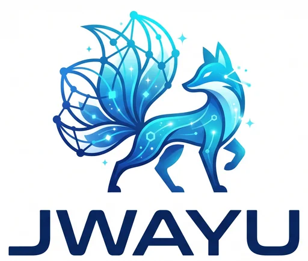

One input. One activation.
A conventional neuron compresses its input into a single scalar activation. It is precise, stable and efficient, but it collapses local possibilities immediately into one point.
h = φ(wᵀx + b)
Variational intelligence, built from the neuron up
JWAYU 杰维宇 develops language models in which uncertainty is not added only at the output. It becomes part of the internal computation itself, through EVE — the Elemental Variational Expanse.

Our thesis
Modern language models are extraordinarily capable, yet their internal units remain largely deterministic. JWAYU begins with a different premise: when ambiguity is intrinsic to intelligence, the computational unit should be able to represent it.
A conventional neuron compresses its input into a single scalar activation. It is precise, stable and efficient, but it collapses local possibilities immediately into one point.
h = φ(wᵀx + b)
An EVE unit constructs an input-conditioned posterior, samples a latent state through reparameterization and uses that state directly in computation.
qφ(z|x) = 𝒩(μ(x), diag(σ²(x)))
EVE — Elemental Variational Expanse
It is a local probabilistic computational unit with an explicit prior, an amortized posterior and unit-level variational regularization. Its activation is no longer merely a value: it is generated from a learned distribution.
The unit receives the current representation and produces posterior parameters.
A local Gaussian posterior represents a continuous set of plausible latent states.
Reparameterization produces a differentiable latent sample used in the forward pass.
A local KL term regularizes the posterior against its prior and makes the unit’s operating regime measurable.
Propagates one activation. Uncertainty is not represented inside the unit.
Introduces randomness through masks or sampled paths, without turning each unit into an explicit input-conditioned latent posterior.
Maintains a learned local distribution with a prior, a posterior, a latent sample and internal diagnostics.
A language model should not have to collapse uncertainty before it has used it.
A Variational language model introduces EVE units into the model’s hidden computation, including Transformer feed-forward blocks. The overall architecture remains recognizable, while its internal computational primitive changes.
Instead of treating uncertainty as a final confidence score, the model can carry local latent structure across layers and use internal signals such as posterior variance, KL divergence and mutual information for evaluation, calibration and control.
From neuron to model
JWAYU develops the primitive, studies its operating regime, integrates it into Transformers and turns internal uncertainty into an actionable signal.
Define local variational computation and make its internal probabilistic state observable.
Study stability, capacity, latent dimensionality, temporal persistence and collapse control.
Integrate EVE into feed-forward computation while preserving a practical Transformer backbone.
Use internal diagnostics for monitoring, checkpoint selection, routing and inference-time intervention.
Earlier work
These papers introduce the neuron, map its design space, integrate it into Transformers and explore uncertainty as an agentic control signal.
Introduces the proof of concept: a computational unit formulated as a local variational primitive with a prior, amortized posterior and local regularization.
Studies latent dimensionality, local capacity, temporal persistence and the measurable internal operating regime of EVE.
Places EVE units inside Transformer feed-forward computation and evaluates predictive quality, calibration and uncertainty signals.
Explores internal uncertainty as an operational signal for regulation, checkpoint retention and inference-time intervention.
Research
Research Square articles and Zenodo preprints.
EVE makes uncertainty a neuron-level computational primitive and evaluates it from a single-unit microscope to dense networks and Transformer feed-forward computation.
Develops the architectural thesis that distributional representation can reside inside the neuron rather than only in weights, outputs or global latent variables.
Freezes the learned EVE posterior and varies only the readout rule to test whether a neuron-level latent state carries predictive information beyond its mean.
Defines a local variational neuron and a measurement protocol for KL activity, posterior mean energy, out-of-range units and optional autoregressive persistence.
Yves Ruffenach
Measures unit-level posterior activity alongside predictive quality, calibration and tail-aware evaluation in next-token prediction.
DOI: 10.5281/zenodo.21668942
Yves Ruffenach
Evaluates EVE as a controlled small-scale mechanism for measurable internal distributional activity across five matched random seeds.
DOI: 10.5281/zenodo.21669216
Yves Ruffenach
Introduces an internal measurement panel for local posterior activity and relates it to output-level predictive behavior.
DOI: 10.5281/zenodo.21641827
Yves Ruffenach
Presents EVE as a language-model architecture for measurable internal uncertainty, reliability monitoring and uncertainty-aware computation.
DOI: 10.5281/zenodo.21632472
For investors and strategic partners
JWAYU 杰维宇 is building intellectual property, experimental evidence and implementation expertise around Variational neurons and language models.
Move probabilistic structure from only global mechanisms or outputs into hidden computational units.
Expose local signals that can support calibration, robustness analysis, routing and model control.
Develop the primitive inside familiar neural and Transformer backbones rather than replacing the entire ecosystem.
A growing sequence of public preprints establishes the concept, design space, language-model integration and agentic use.
Research · Engineering · Collaboration
We welcome conversations with researchers, frontier-model teams, engineers, doctoral partners and organizations interested in uncertainty-aware multimodal and language models.